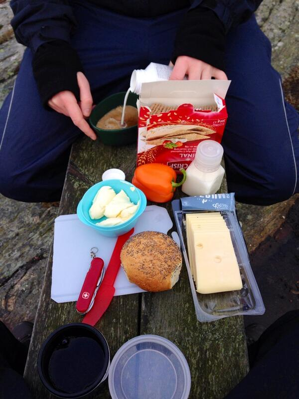

February 2014
.@propublica Data Store projects.propublica.org/data-store/ <- Nice, how about moving up the ladder towards 5star #LinkedData 5stardata.info ?
Added a new MOOC certificat on my LinkedIN profile linkedin.com/in/kerfors Fundamentals of Clinical Trials, HarvardX via @edXOnline
New blog post: Why I am so obsessed with this Semantic Web thing kerfors.blogspot.se/2014/02/why-i-… HT to Charlie Mead and @mscottmarshall
The FDA/PhUSE Semantic Technology project phusewiki.org/wiki/index.php… on #CSHALS program later today iscb.org/cshals2014-pro… #cdisc
Today and tomorrow I'll follow #cshals #cshals2014 Conference on Semantics in Healthcare and Life Sciences iscb.org/cshals2014-pro…
Nice feed of presentation tweets -> MT @dtunkelang: Name search on LinkedIn is personalized, using network distance.. pic.twitter.com/Si5uJK3uUe
@DrTaha_FDA For #OpenFDA <- Make use of Linked SPL and AERS-LD see twitter.com/matthiassamwal… cc: @w3c
MT @DrTaha_FDA: The #OpenFDA platform will for accessing developer-friendly APIs <- Consider Linked Open Data 5stardata.info
#Web25 For me it started when my previous colleague @futuramb said “It's like a "Global Hypercard".” kerfors.blogspot.se/2014/02/why-ar…
I've submitted #Amyloidosis as a Disease hashtag to The Healthcare Hashtag Project symplur.com/healthcare-has…
MT @collabchem: Rare disease day - post on amyloidosis lnkd.in/b4v7shY <- Thank you, #Amyloidosis (AA) killed my Father 25 years ago
Interesting to follow @bengoldacre now on #caredara <- Code of practice, transparency on what's shared, to whom, what's done with it..
@PracticalWisdom @Colin_Hung @RasuShrestha Thanks for tweets #himss14 semantic interop. Checkout this short video ecancer.org/conference/529…
IT trends according to 10 IT experts all women as a suppl to the 10 male experts [Swe] p3rnilla.com/sa-tror-it-exp… HT @p3rnilla
Hi “innovators walking halls than manning booths at #HIMSS14 ” @wareFLO @fredtrotter Check out ecancer.org/conference/529… #SemanticWeb
@marcusosterberg Blue button i kliniska studier också: Pfizer pharmafile.com/news/181061/pf… <- patientrekryterings argument = kortare tid = pengar
@pernillan Lite mera om hur snacket gick om detta på #oddgbg hittar du i @marcusosterberg's utmärkta anteckningar webbfunktion.com/open-data-day-…
“Idea is to pseudonymise before data leaves surgery in way that still allows linkage.” --@JuliaHCox openpseudonymiser.org/resources/0.9.…
How to Get a Job at Google nyti.ms/MOd758 by @tomfriedman “ability to learn/relearn, problem solving on the fly, big ego+small ego”
@wareFLO @HIMSS Yes, that's also what Charlie Mead also say in a really good way in this interview ecancer.org/conference/529…
Remarkable that @HIMSS' #himss14 program himssconference.org/index.aspx do not mention #SemanticWeb #LinkedData #RDF #OWL at all
Interesting columns about NHS care.data by @bengoldacre theguardian.com/society/2014/f… and by @JananGanesh bit.ly/MJ4gSi
@pernillan FYI Länkade data hela dagen den 13/3 på Malmö högskola. Anmälan: ldsv2014.eventbrite.com (med @bBalsa) #lankadedata cc: @mariegus
.@JeanneHolm URIs for bus stops to link public transport data see kerfors.blogspot.se/2011/08/travel… #odd14 #oddgbg #oppnadata #lankadedata
On my way to #oppnadata event in Göteborg tba.nu/oddgbg One of many around the world today #ODD14 (HT @marcusosterberg) #oddgbg
+1 RT @TrishWhetzel: Convergence of ecosystems for personal health data and clinical records is needed #mHealth #wearables
@jhjelliott Future scenario: Linked Data CSRs with computable analysis results. See FDA/PhUSE Semantic Techn project phusewiki.org/wiki/index.php…
MT @drsteventucker: Forget prescribing apps…Today I registered my patient for a #MOOC coursera.org/course/nutriti… <- "There's an MOOC for that"
I hope to see Living CSRs from #clinicaltrials #RCT in a New Evidence Ecosystem enabling Living systematic reviews -> dx.plos.org/10.1371/journa…
“In the growing deluge of research the noble science of systematic review resembles archeology..” dx.plos.org/10.1371/journa…
Great morning - training, coffee and 'macka' on the train reading: Living Systematic Reviews.. dx.plos.org/10.1371/journa… HT @mavergames
MT @pdmetcalfe: Have persuaded SAS to export its labels. Can now annotate data somewhat. <- Cool, have a look at w3.org/2013/05/lcsv-c…
"What Linked Data Does, What Linked Data Needs" Meetup, London, 25 Febr, I hope for a nice feed of tweets to follow meetu.ps/2bYwgd
Nice, we have a small study team: Design and Interpretation of Clinical Trials from @JohnsHopkins on @coursera coursera.org/course/clintri…
MT @mavergames: #PLOSMedicine Living Systematic Reviews: An Emerging... #CochraneTech dx.plos.org/10.1371/journa… #LinkedData
+10 MT @dWiseTech: Decoding Clinical Data Standard Acronyms hub.am/MwhNMW <-“@w3c standards RDF, OWL, SKOS are an ideal framework”
STATO: STATistics Ontology @isatools isa-tools.github.io/stato/ Of interest for FDA/PhUSE Semantic Techn project phusewiki.org/wiki/index.php… #CDISC
Cool -> Google is looking for a BA: “Hand-on experience with commercial technologies for Ontology/RDF/OWL” semanticweb.com/semantic-web-j…
The task this week: Turn 25+ years 'working with data' into 2 pages of STARs to prove "Hybrid skill set" for "High density roles"... #yam
Cool, hope to see corps/orgs setting up Knowledge Graphs -> @SindiceTech's Freebase Distribution launched! sindicetech.com/freebase
MT @graphityhq: We will be presenting at "#LinkedData Sweden 2014" on March 14th in Malmö. eventbrite.com/e/lankade-data… #lankadedata
MT @W3CSverige: Nytt dokument: länkad data ... Best Practices for Publishing Linked Data. Se w3c.se/news-archive/2… #lankadedata
Nice to see @EricTopol in Swedish Television @svtvetenskap in a program from BBC bbc.co.uk/news/health-23… on health apps
Information Artifact Ontologies Workshop organized as part of Formal Ontologies in Information Systems #FOIS2014 ncorwiki.buffalo.edu/index.php/Info…
@omowizard Add #cdisc and their "concept model" in next release of SHARE cdisc.org/share-r1-is-do… to your list
Great #gamification14 example -> MT: @caranoverio: LinkedIn profile progress bar increased profile completion by 20% pic.twitter.com/qK3GbJXZCF
MT @coursera: MOOC Trim Billions in Personnel Training.. ow.ly/tF4vm Does your work encourage employee education? <- Yes
Recommended book for parents -> It's Complicated: The Social Lives of Networked Teens digital.hechingerreport.org/content/the-se… #yam
@grapealope @acroll thx for great feeds from #strataconf -- great to read early mornings on the bus over here in Sweden
Facebook gives you 50 gender options edition.cnn.com/2014/02/13/tec… <- How about data standards from @CDISC @HL7 @SnomedCT ?
Great for colleagues new to Twitter -> @JohnLauner's reflections on Twitter and its charms pmj.bmj.com/content/89/105…
List: Experts with interesting feeds on different aspects of Clinical Trials twitter.com/kerfors/clinic… To show a colleage the value of Twitter
+1 RT @Cochrane_IDG: #Cochrane announces partnership initiative with @WikiProjectMed #wikipedia ow.ly/tvcFG
MT @fredtrotter: Thomson Reuters Cortellis: Drug pipeline | patents cortellis.thomsonreuters.com <- powered by #LinkedData semanticweb.com/thomson-reuter…
+1 MT @SemanticWeb: Thomson Reuters Cortellis Data Fusion Addresses #BigData Challenges with #LinkedData bit.ly/1kzHFpb
;-) MT @jacqui: Is Data bigger than data? And if so, DATA is huge and ¡DATA! is ginormous! #GinormousData
Interesting -> @OECD has selected @TopQuadrant as its #DataIntegration partner ow.ly/tvPF9 #SemanticWeb
MT @eventkalendern: Nytt event i Eventkalendern: Länkad data i Sverige 2014, Malmö, 13 mars, zpr.io/g29m #LankadeData
Karolinska Institutet offers world class MOOCs, massive open online courses, via @edXOnline goo.gl/yG6G6x #yam
MT @OKFNUS: #OpenFDA - API and download access to #opendata from the @US_FDA open.fda.gov <- see also twitter.com/matthiassamwal…
"CSVs as 5 star data, a non format data that allows data to be linked to other sources" w3.org/2013/05/lcsv-c… by @danbri @JeniT #LinkedData
Just for fun I've enrolled to Bruno Latour's MOOC bruno-latour.fr/node/532 My prev, Prof. Bo Dahlbom often mentioned his science studies
I really like @coursera's iOS app. I've just down loaded week 3 of #gamification14 coursera.org/course/gamific…
Karolinska Institutet offers MOOCs via @edXOnline from Q4 2014 edx.org/school/kix <- Excellent news (HT mymarkup)
@FrankVanHarmele @egonwillighagen I'm positive to MOOCs for "life-long-learning" as also these stats show forbes.com/sites/gilpress…
Looking at the #cshals program (Conference on Semantics in Healthcare and Life Sciences) iscb.org/cshals2014-pro… <- Sorry I can't make it IRL
20 years ago: Why are you so obsessed with this "Web thing"? Now colleagues ask about "this Semantic Web thing" kerfors.blogspot.se/2014/02/why-ar…
What Big Data Means to Me @pebourne jamia.bmj.com/content/21/2/1… <- With nice ex. of Digital Enterprise taking full advantage of digital assets.
+1 MT @timdavies: ...work out if my Ontology->JSON-LD->CSV data standard mapping idea makes any sense or not. timdavies.org.uk/2014/01/08/joi…
Research breakfast with @dagmarwaltemath on Marstrandsön Develpment cand uptake of community standards #SBML #CDISC

Web turns 25! A @WiredUK inspired me to blog: Why are you so obsessed with this "(Semantic) Web thing"?? kerfors.blogspot.se/2014/02/why-ar… #web25
How about openFDA open.fda.gov as 5 star #LinkedData #OpenData 5stardata.info ?? cc: @ivsin @AlecGaffney
Interesting #IGNITEinterop feed: Health Care Innovation Day Igniting an Interoperable Health Care System hcidc.org
New blog post: Why are you so obsessed with this "Semantic Web thing"? kerfors.blogspot.se/2014/02/why-ar…
20 years ago colleagues asked: Why are you so obsessed with this "WWW thing"? Now they ask the about this "#SemanticWeb thing"
MT @mariegus: Länkade data hela dagen den 13/3 på @Medea, Malmö högskola. Anmälan: ldsv2014.eventbrite.com (med @bBalsa) #lankadedata
I've just introduced FDA/PhUSE Semantic Techn project representation of @CDISC Standards in RDF github.com/phuse-org/rdf.… to #EHR4CR
Cool - I think I'll be using this a lot -> RT @ihenriksen: A social media search engine dedicated to hashtags. hshtags.com
Would love to see a Linked Data API for developers #EHR4CR' (dev.ehr4cr.org ) similar to @Open_PHACTS' dev.openphacts.org
To-Read -> MIT Workshop on Accountability: Science, Technology and Policy dig.csail.mit.edu/2014/Accountab… via @djweitzner #InfoAccountability
Great to be able to catch up with @SCOPEsummit #SCOPE2014 as it's captured in real time eventifier.com/event/scope201… using @TryEventifier
Cool #SemanticWeb in Wired -> RT @WIREDBiz: Search today and beyond - optimizing for the semantic web: wired.com/insights/2014/…
Just learned about the Essential Standards to Enable Learning (ESTEL) iom.edu/~/media/Files/… from Landen Bain @CDISC
On my to-do list -> MT @krystianszastok: I Became an Entity: How I'm on Google's #KnowledgeGraph j.mp/1n8ieZ0
Learning about the TRANSFoRm (Translational research and patient safety in Europe) project transformproject.eu in the #EHR4CR workshop
Nice: My post "Mind maps just begging for RDF triples and formal models" is the 2nd most popular on my blog kerfors.blogspot.se/2012/09/mind-m…
Immport Ontology meeting with @atulbutte, Barry Smith, @alanruttenberg et al from Sep 2013 ncorwiki.buffalo.edu/index.php/ImmP…
The @theIOM workshop on Strategies for Responsible Sharing of Clinical Trial Data iom.edu/Activities/Res… with@wilbanks defining #opendata
Chris Welty: "For Medical QA with @IBMWatson Entity Disambiguation and Matching is a major bottleneck" ontolog.cim3.net/file/work/Onto… [last slide]
The core of @IBMWatson "Typing candidate answers using type coercion" andrew.cmu.edu/user/ooo/watso… Chris Welty at @ontologysummit #ontosummit